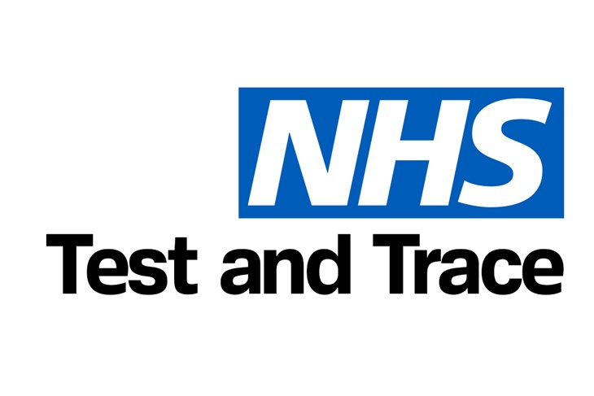

NHS Test and Trace Helpline Advisor
During my role as an NHS Test and Trace Helpline Advisor, I undertook vital outbound isolation calls to monitor the health and isolation progress of individuals in relation to COVID-19. With patience and empathetic communication, I engaged in clear and compassionate conversations, ensuring that individuals fully understood the guidelines and protocols associated with their isolation. This necessitated quick thinking and adaptability, as I addressed inquiries and concerns effectively while maintaining a supportive demeanour.
Over the course of my engagement, I successfully completed 1300 calls, contributing to the overall effort of managing and containing the spread of COVID-19. These interactions were conducted remotely, requiring me to think critically on the spot as individuals often sought clarification and guidance about their isolation journey. In doing so, I was able to provide reassurance, clarify doubts, and help individuals navigate the complexities of isolation with confidence.
In this role, I honed my problem-solving skills, particularly when unforeseen issues arose. My ability to swiftly assess situations and provide accurate and detailed information regarding the current health status and isolation progress of patients was pivotal. Each call presented a unique scenario, and my role demanded both adaptability and precision to ensure that the individual received the necessary support and guidance.
My time as an NHS Test and Trace Helpline Advisor was not only a testament to my clear communication abilities and quick thinking but also a demonstration of my commitment to contributing to public health. By being a reliable and empathetic source of information and assistance, I played a part in the collective effort to manage the pandemic effectively, one call at a time.